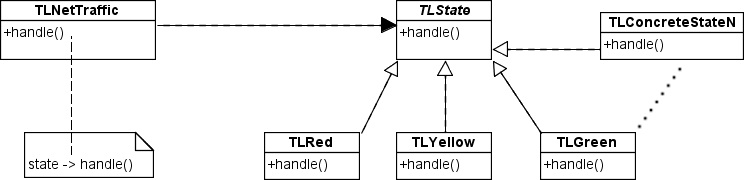

Using the Design Pattern State, for the Simple Problem of the Semaphore
Introduction
In this article I explain the use of the State Design Pattern, using good programming practices. Drawing on a simple problem that we can develop at different time intervals, the semaphore.
Pattern State
It is conceived as one of the Patterns of Behavior, basically admits that transforms any object behavior because its status changes.
Here we can see the class diagram of Pattern State, using appropriate names of class.

In the diagram the various participants can have and its definition are presented.
- Context | TLNetTraffic : This class can contain different states.
- State | TLState : Defines a common Interface or Abstract Class for all concrete states, always implementing the same interface or abstracting the same class.
- ConcreteState | TL {Red, Yellow, Green} : For each particular state implements a behavior associated with a state of the context.
Implementation
We must have sufficient and necessary knowledge of OOP, and most of all pointers.
...we define our Context Class, look, that it starts in the Red Light state:
¨TLNetTraffic.h¨
|
|
¨TLNetTraffic.cpp¨
|
|
...common to all states that can be implemented, abstract class, using the Handle() method as changing states should be overwritten by derived classes:
¨TLState.h¨
|
|
...certainly, each state separately, see that the implementation is the same for all three state but not always will be, everything depends on the implementation that is needed for each state:
¨TLRed.h¨
|
|
¨TLRed.cpp¨
|
|
¨TLGreen.h¨
|
|
¨TLGreen.cpp¨
|
|
¨TLYellow.h¨
|
|
¨TLYellow.cpp¨
|
|
...again, the main function. We use the library <time.h> for state changes in time intervals.
|
|
The essential idea is to change the states of light at time intervals {RedLight (6 sec), GreenLight (4 sec), YellowLight (5 sec)} infinitely normally functioning traffic lights any road, perhaps used some data may not be accurate.
...and without fail, the sleep() function, which keeps the time instants at each iteration:
|
|
Will produces ouput:
--------- Session 1 --------- Red Light Green Light Yellow Light --------- Session 2 --------- Red Light Green Light Yellow Light --------- Session 3 --------- … and so on |
Conclusion
Proper use of various feedback and Design Patterns already defined should be used in all that is program today. In the implementation we have here a problem solved by using patterns and skills can be evidenced. Fortunately, I continue to work for everyone.
Bibliography recommended on Design Patterns
- Steve Holzner, PhD. (2006). Design Patterns for Dummies.
- Eric Freeman, Elizabeth Freeman, Kathy Sierra, Bert Bates. (2004). Your Brain on Design Patterns Head First Design Patterns.
- James W. Cooper. (2000). JAVATM Design Patterns : A Tutorial.
- Erich Gamma, Richard Helm, Ralph Johnson, Jhon Vlissides. (1998). Design Patterns. Gang of Four.
Attachments: [afg_SourceSemaphorePDState.zip]